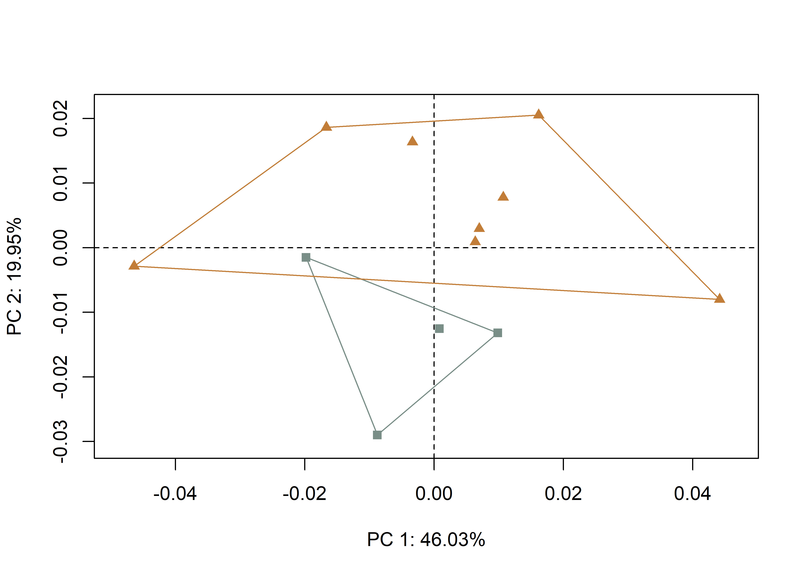

Chapter 6 Hypothesis 1a
This effort follows recent analyses of Gahagan biface shapes across the southern Caddo area and central Texas (Selden Jr., Dockall, and Shafer 2018; Selden Jr., Dockall, and Dubied 2020), where Gahgagan bifaces were found to differ in shape across the same geography as Caddo bottles (Selden Jr. 2018a, 2018b, 2019, 2021) and Perdiz arrow points (Selden and Dockall, in review). The analysis builds upon previous discussions and analyses conducted by Shafer (1973b, 1974, 2006). A succinct overview of the analytical procedures used for this analysis is provided in the manuscript, and the analytical code provided in this document can be used to reproduce the results exactly.
Hypothesis 1a: Temporal change in Caddo preference at Mounds Plantation
In assessing a temporal change in preference between Gahagan bifaces from Mound 5 at the Mounds Plantation site, those from burials included during mound development and/or construction (Burial Pits 1, 5, and 8) are contrasted with those from Burial Pit 2 which cuts into the corner of Burial Pit 1, cutting downward from the mound’s surface (Webb and McKinney 1975). The stratigraphic position of Burial Pit 2 indicates that this burial occurred after those associated with Burial Pits 1, 5, and 8 (Webb and McKinney 1975).
knitr::include_graphics('images/h1a.jpg')(#fig:h1a.analysis)Stratigraphic position of Burial Pits 1 and 2 at the Mounds Plantation site; adapted from Webb (1975:Figure 7). Burial Pit 2 is the only burial found to be intrusive from the mound surface.
6.1 Load packages + data
# load libraries
library(here)
library(geomorph)## Loading required package: RRPP## Loading required package: rgl##
## Attaching package: 'rgl'## The following object is masked from 'package:plotrix':
##
## mtext3d## Loading required package: Matrixlibrary(tidyverse)## -- Attaching packages ------------------------------------- tidyverse 1.3.1 --## v ggplot2 3.3.5 v purrr 0.3.4
## v tibble 3.1.6 v dplyr 1.0.7
## v tidyr 1.1.4 v stringr 1.4.0
## v readr 2.1.0 v forcats 0.5.1## -- Conflicts ---------------------------------------- tidyverse_conflicts() --
## x tidyr::expand() masks Matrix::expand()
## x dplyr::filter() masks stats::filter()
## x dplyr::group_rows() masks kableExtra::group_rows()
## x dplyr::lag() masks stats::lag()
## x tidyr::pack() masks Matrix::pack()
## x tidyr::unpack() masks Matrix::unpack()library(wesanderson)## Registered S3 method overwritten by 'wesanderson':
## method from
## print.palette DescToolssource('readmulti.csv.R')
# read .csv files
setwd("./dataH1a")
filelist <- list.files(pattern = ".csv")
coords <- readmulti.csv(filelist)
setwd("../")
# read qualitative data
qdata <- read.csv("qdataH1a.csv",header = TRUE, row.names = 1)
qdata <- qdata[match(dimnames(coords)[[3]], rownames(qdata)),]6.2 Generalized Procrustes Analysis
Landmark data were aligned to a global coordinate system (Kendall 1981, 1984; Slice 2001), achieved through generalized Procrustes superimposition (Rohlf and Slice 1990) performed in R 4.1.0 (R Core Development Team, 2021) using the geomorph library v. 4.0.0 (Adams et al. 2017; Adams and Otárola-Castillo 2013; Baken et al. 2021). Procrustes superimposition translates, scales, and rotates the coordinate data to allow for comparisons among objects (Gower 1975; Rohlf and Slice 1990). The geomorph package uses a partial Procrustes superimposition that projects the aligned specimens into tangent space subsequent to alignment in preparation for the use of multivariate methods that assume linear space (Rohlf 1999; Slice 2001).
Y.gpa <- gpagen(coords,
PrinAxes = TRUE,
print.progress = FALSE)
## plot gpa
#plot(Y.gpa)
## 3D gpa plot
#knitr::include_graphics('images/m5b2-gpa3d.png')
# geomorph data frame
gdf <- geomorph.data.frame(shape = Y.gpa$coords,
size = Y.gpa$Csize,
context = qdata$context)
# add centroid size to qdata
qdata$csz <- Y.gpa$Csize
# attributes for boxplot
csz <- qdata$csz
context <- qdata$context
# palette
pal <- wes_palette("Moonrise2")6.3 Boxplot
# boxplot - centroid size by context
csz.temp <- ggplot(qdata, aes(x = context, y = csz, color = context)) +
geom_boxplot() +
geom_dotplot(binaxis = 'y', stackdir = 'center', dotsize = 0.3) +
scale_color_manual(values = pal) +
theme(legend.position = "none") +
labs(x = 'Context', y = 'Centroid Size')
## render plot
csz.temp## Bin width defaults to 1/30 of the range of the data. Pick better value with `binwidth`.
6.4 Principal Components Analysis
Principal components analysis (Jolliffe 2002) was used to visualise shape variation among the bifaces. The shape changes described by each principal axis are commonly visualized using thin-plate spline warping of a reference 3D mesh (Klingenberg 2013; Sherratt et al. 2014).
# principal components analysis
pca <- gm.prcomp(Y.gpa$coords)
summary(pca)##
## Ordination type: Principal Component Analysis
## Centering by OLS mean
## Orthogonal projection of OLS residuals
## Number of observations: 12
## Number of vectors 11
##
## Importance of Components:
## Comp1 Comp2 Comp3 Comp4
## Eigenvalues 0.0004932022 0.0002137686 0.0001058775 9.861484e-05
## Proportion of Variance 0.4603208810 0.1995168130 0.0988187115 9.204027e-02
## Cumulative Proportion 0.4603208810 0.6598376941 0.7586564056 8.506967e-01
## Comp5 Comp6 Comp7 Comp8
## Eigenvalues 4.256568e-05 3.860264e-05 2.803842e-05 0.0000227713
## Proportion of Variance 3.972786e-02 3.602903e-02 2.616912e-02 0.0212531536
## Cumulative Proportion 8.904245e-01 9.264536e-01 9.526227e-01 0.9738758503
## Comp9 Comp10 Comp11
## Eigenvalues 1.393787e-05 7.937523e-06 6.114837e-06
## Proportion of Variance 1.300865e-02 7.408335e-03 5.707167e-03
## Cumulative Proportion 9.868845e-01 9.942928e-01 1.000000e+00# set plot parameters to plot by context
pch.gps.context <- c(15,17)[as.factor(context)]
col.gps.context <- pal[as.factor(context)]
col.hull.context <- c("#798E87","#C27D38")
## plot pca by context 2
pc.plot <- plot(pca, asp = 1,
pch = pch.gps.context,
col = col.gps.context)
shapeHulls(pc.plot,
groups = context,
group.cols = col.hull.context)
6.4.1 Plot PCA with mean shape + x/y maxima/minima
## plot PCA with mean shape (gray) and x/y maxima/minima (black)
#knitr::include_graphics('images/cacheind-pca-warpref.png')6.5 Procrustes ANOVA
A residual randomization permutation procedure (RRPP; n = 10,000 permutations) was used for all Procrustes ANOVAs (Adams and Collyer 2015; Michael L. Collyer and Adams 2018), which has higher statistical power and a greater ability to identify patterns in the data should they be present (Anderson and Ter Braak 2003). To assess whether shape changes with size (allometry), and differs by context (context), Procrustes ANOVAs (Goodall 1991) were also run that enlist effect-sizes (zscores) computed as standard deviates of the generated sampling distributions (M. L. Collyer, Sekora, and Adams 2015).
# MODEL: shape as a function of context
fit.shapecontext <- procD.lm(shape ~ context,
data = gdf,
print.progress = FALSE,
iter = 9999)
# ANOVA: do gahagan biface shapes differ by context?
anova(fit.shapecontext)##
## Analysis of Variance, using Residual Randomization
## Permutation procedure: Randomization of null model residuals
## Number of permutations: 10000
## Estimation method: Ordinary Least Squares
## Sums of Squares and Cross-products: Type I
## Effect sizes (Z) based on F distributions
##
## Df SS MS Rsq F Z Pr(>F)
## context 1 0.0014272 0.0014272 0.1211 1.3779 0.81985 0.2224
## Residuals 10 0.0103585 0.0010359 0.8789
## Total 11 0.0117857
##
## Call: procD.lm(f1 = shape ~ context, iter = 9999, data = gdf, print.progress = FALSE)# MODEL: size as a function of context
fit.sizecontext <- procD.lm(size ~ context,
data = gdf,
print.progress = FALSE,
iter = 9999)
# ANOVA: do gahagan biface sizes differ by context?
anova(fit.sizecontext)##
## Analysis of Variance, using Residual Randomization
## Permutation procedure: Randomization of null model residuals
## Number of permutations: 10000
## Estimation method: Ordinary Least Squares
## Sums of Squares and Cross-products: Type I
## Effect sizes (Z) based on F distributions
##
## Df SS MS Rsq F Z Pr(>F)
## context 1 150810 150810 0.49514 9.8074 2.4937 0.0059 **
## Residuals 10 153773 15377 0.50486
## Total 11 304583
## ---
## Signif. codes: 0 '***' 0.001 '**' 0.01 '*' 0.05 '.' 0.1 ' ' 1
##
## Call: procD.lm(f1 = size ~ context, iter = 9999, data = gdf, print.progress = FALSE)